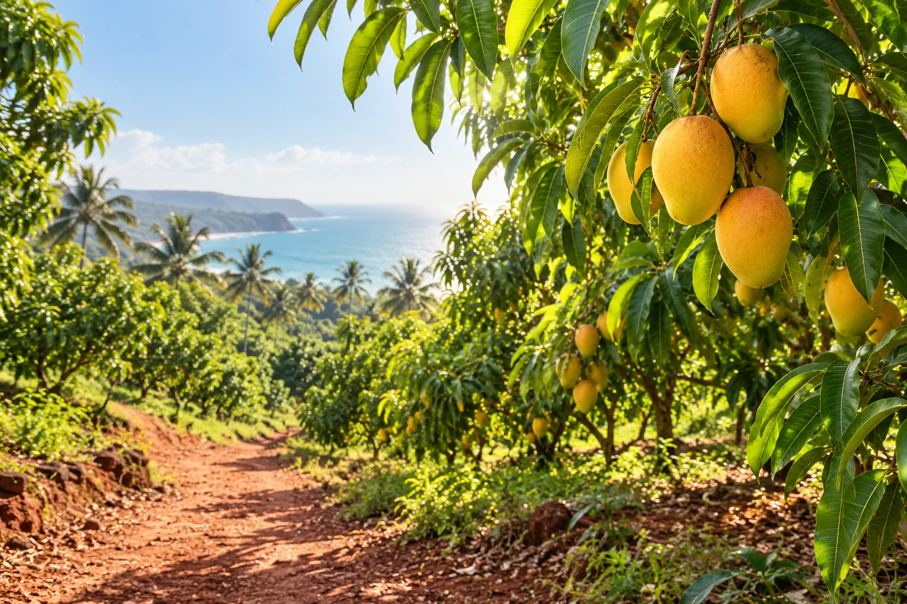

★★★★★
“A lovely taste of Konkan at our family table.”
Sample home customer
Illustrative testimonialROOTED IN RATNAGIRI · SHARED WITH THE WORLD
Authentic coastal flavours, with personal support for home and bulk enquiries.
Mango · Kokum · Jackfruit · Pickles

ONE COAST. SO MANY FLAVOURS.
From the fruit to the flavours you love.
Watch each chapter unfold.
A little sunshine, from pulp and dried chunks to familiar mango favourites.
View mango products ↗A PEEK INSIDE OUR COLLECTION
VOICES AROUND THE TABLE
★★★★★
“A lovely taste of Konkan at our family table.”
Sample home customer
Illustrative testimonial★★★★★
“The kind of regional flavours we’d love to explore for our store.”
Sample retail buyer
Illustrative testimonial★★★★★
“A thoughtful collection for sharing a little coastal nostalgia.”
Sample gifting customer
Illustrative testimonialOUR STORY · OUR PURPOSE
“I saw that authentic, pure products were not easily available, so I decided to take the authenticity of Konkan to the world.”
KONKANPURE exists to bring the region’s fruit products and familiar flavours to more homes and businesses.
Sujal Surve FOUNDER, KONKANPURE
TWO WAYS TO BRING KONKAN CLOSER
Explore the products → Share your favourites and quantity → Discuss availability and delivery with us.
Enquire for home ↗Share your product requirements → Discuss quantities, packaging and timelines → Plan your seasonal supply together.
Start a bulk enquiry ↗LET’S PLAN AHEAD · SEASON 2027
Tell us what you need before season 2027 starts—products, quantities and preferred timing.
A FEW THINGS, SIMPLY ANSWERED
Sample answer: Seasonal availability and launch dates will be confirmed closer to the season. Contact us to discuss your requirements.
Sample answer: Yes. Share your preferred products and quantity, and we’ll discuss the next steps.
Sample answer: Delivery areas, charges and timelines will be confirmed individually on enquiry.
Sample answer: Packaging shown is conceptual. Final ingredients, pack sizes, prices and availability will be shared before an order is confirmed.
A LITTLE KONKAN IS A CONVERSATION AWAY